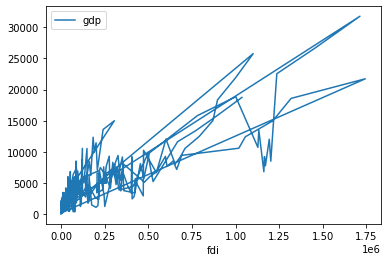

import numpy as np
import pandas as pdCredit: code from https://github.com/nils-braun/dask-sql and https://coiled.io/blog/getting-started-with-dask-and-sql/
Dask SQL docs https://dask-sql.readthedocs.io/
dask-sql
df = pd.read_csv('df_panel_fix.csv')df| Unnamed: 0 | province | specific | general | year | gdp | fdi | rnr | rr | i | fr | reg | it | |
|---|---|---|---|---|---|---|---|---|---|---|---|---|---|
| 0 | 0 | Anhui | 147002.0 | NaN | 1996 | 2093.30 | 50661 | 0.000000 | 0.000000 | 0.000000 | 1128873 | East China | 631930 |
| 1 | 1 | Anhui | 151981.0 | NaN | 1997 | 2347.32 | 43443 | 0.000000 | 0.000000 | 0.000000 | 1356287 | East China | 657860 |
| 2 | 2 | Anhui | 174930.0 | NaN | 1998 | 2542.96 | 27673 | 0.000000 | 0.000000 | 0.000000 | 1518236 | East China | 889463 |
| 3 | 3 | Anhui | 285324.0 | NaN | 1999 | 2712.34 | 26131 | NaN | NaN | NaN | 1646891 | East China | 1227364 |
| 4 | 4 | Anhui | 195580.0 | 32100.0 | 2000 | 2902.09 | 31847 | 0.000000 | 0.000000 | 0.000000 | 1601508 | East China | 1499110 |
| ... | ... | ... | ... | ... | ... | ... | ... | ... | ... | ... | ... | ... | ... |
| 355 | 355 | Zhejiang | 391292.0 | 260313.0 | 2003 | 9705.02 | 498055 | 1.214286 | 0.035714 | 0.035714 | 6217715 | East China | 2261631 |
| 356 | 356 | Zhejiang | 656175.0 | 276652.0 | 2004 | 11648.70 | 668128 | 1.214286 | 0.035714 | 0.035714 | NaN | East China | 3162299 |
| 357 | 357 | Zhejiang | 656175.0 | NaN | 2005 | 13417.68 | 772000 | 1.214286 | 0.035714 | 0.035714 | NaN | East China | 2370200 |
| 358 | 358 | Zhejiang | 1017303.0 | 394795.0 | 2006 | 15718.47 | 888935 | 1.214286 | 0.035714 | 0.035714 | 11537149 | East China | 2553268 |
| 359 | 359 | Zhejiang | 844647.0 | 0.0 | 2007 | 18753.73 | 1036576 | 0.047619 | 0.000000 | 0.000000 | 16494981 | East China | 2939778 |
360 rows × 13 columns
from dask import dataframe as dd ddf = dd.from_pandas(df, npartitions=5)ddfDask DataFrame Structure:
| Unnamed: 0 | province | specific | general | year | gdp | fdi | rnr | rr | i | fr | reg | it | |
|---|---|---|---|---|---|---|---|---|---|---|---|---|---|
| npartitions=5 | |||||||||||||
| 0 | int64 | object | float64 | float64 | int64 | float64 | int64 | float64 | float64 | float64 | object | object | int64 |
| 72 | ... | ... | ... | ... | ... | ... | ... | ... | ... | ... | ... | ... | ... |
| ... | ... | ... | ... | ... | ... | ... | ... | ... | ... | ... | ... | ... | ... |
| 288 | ... | ... | ... | ... | ... | ... | ... | ... | ... | ... | ... | ... | ... |
| 359 | ... | ... | ... | ... | ... | ... | ... | ... | ... | ... | ... | ... | ... |
Dask Name: from_pandas, 5 tasks
from dask.distributed import Client
client = Client(processes=False, threads_per_worker=2,
n_workers=3, memory_limit='4GB')
clientClient
|
Cluster
|
# client.restart()Client
|
Cluster
|
ddf.groupby("province").gdp.mean().compute()province
Anhui 3905.870000
Beijing 4673.453333
Chongqing 2477.712500
Fujian 4864.023333
Gansu 1397.832500
Guangdong 15358.781667
Guangxi 2924.104167
Guizhou 1422.010833
Hainan 686.714167
Hebei 6936.825000
Heilongjiang 4041.241667
Henan 7208.966667
Hubei 4772.503333
Hunan 4765.891667
Jiangsu 10761.846667
Jiangxi 2460.782500
Jilin 2274.854167
Liaoning 5231.135000
Ningxia 432.268333
Qinghai 383.099167
Shaanxi 2658.034167
Shandong 12324.002500
Shanghai 6432.454167
Shanxi 2817.210833
Sichuan 5377.790000
Tianjin 2528.665000
Tibet 170.426667
Xinjiang 1828.896667
Yunnan 2604.054167
Zhejiang 9138.151667
Name: gdp, dtype: float64from dask_sql import Context
c = Context()ddfDask DataFrame Structure:
| Unnamed: 0 | province | specific | general | year | gdp | fdi | rnr | rr | i | fr | reg | it | |
|---|---|---|---|---|---|---|---|---|---|---|---|---|---|
| npartitions=5 | |||||||||||||
| 0 | int64 | object | float64 | float64 | int64 | float64 | int64 | float64 | float64 | float64 | object | object | int64 |
| 72 | ... | ... | ... | ... | ... | ... | ... | ... | ... | ... | ... | ... | ... |
| ... | ... | ... | ... | ... | ... | ... | ... | ... | ... | ... | ... | ... | ... |
| 288 | ... | ... | ... | ... | ... | ... | ... | ... | ... | ... | ... | ... | ... |
| 359 | ... | ... | ... | ... | ... | ... | ... | ... | ... | ... | ... | ... | ... |
Dask Name: from_pandas, 5 tasks
c.register_dask_table(ddf, "fiscal")result = c.sql('SELECT count(1) FROM fiscal')resultDask DataFrame Structure:
| COUNT(1) | |
|---|---|
| npartitions=1 | |
| int64 | |
| ... |
Dask Name: getitem, 22 tasks
result.compute()| COUNT(1) | |
|---|---|
| 0 | 360 |
result = c.sql("""
SELECT
province,
gdp,
fdi
FROM
fiscal AS fiscal
""")result.compute()| province | gdp | fdi | |
|---|---|---|---|
| 0 | Anhui | 2093.30 | 50661 |
| 1 | Anhui | 2347.32 | 43443 |
| 2 | Anhui | 2542.96 | 27673 |
| 3 | Anhui | 2712.34 | 26131 |
| 4 | Anhui | 2902.09 | 31847 |
| ... | ... | ... | ... |
| 355 | Zhejiang | 9705.02 | 498055 |
| 356 | Zhejiang | 11648.70 | 668128 |
| 357 | Zhejiang | 13417.68 | 772000 |
| 358 | Zhejiang | 15718.47 | 888935 |
| 359 | Zhejiang | 18753.73 | 1036576 |
360 rows × 3 columns
print(result.compute()) province gdp fdi
0 Anhui 2093.30 50661
1 Anhui 2347.32 43443
2 Anhui 2542.96 27673
3 Anhui 2712.34 26131
4 Anhui 2902.09 31847
.. ... ... ...
355 Zhejiang 9705.02 498055
356 Zhejiang 11648.70 668128
357 Zhejiang 13417.68 772000
358 Zhejiang 15718.47 888935
359 Zhejiang 18753.73 1036576
[360 rows x 3 columns]from dask_sql import Context
from dask.datasets import timeseriesprint(result.gdp.mean().compute())4428.653416666667resultDask DataFrame Structure:
| province | gdp | fdi | |
|---|---|---|---|
| npartitions=5 | |||
| 0 | object | float64 | int64 |
| 72 | ... | ... | ... |
| ... | ... | ... | ... |
| 288 | ... | ... | ... |
| 359 | ... | ... | ... |
Dask Name: getitem, 30 tasks
%%time
ddf.groupby("province").fdi.mean().compute()CPU times: user 96.7 ms, sys: 1.99 ms, total: 98.7 ms
Wall time: 87.4 msprovince
Anhui 7.095308e+04
Beijing 2.573693e+05
Chongqing 4.112783e+04
Fujian 3.744664e+05
Gansu 5.295500e+03
Guangdong 1.194950e+06
Guangxi 5.514783e+04
Guizhou 5.812333e+03
Hainan 6.436600e+04
Hebei 1.322308e+05
Heilongjiang 8.271933e+04
Henan 9.442600e+04
Hubei 1.497132e+05
Hunan 1.321102e+05
Jiangsu 8.736957e+05
Jiangxi 1.037352e+05
Jilin 4.122658e+04
Liaoning 2.859253e+05
Ningxia 3.950417e+03
Qinghai 1.098408e+04
Shaanxi 5.089258e+04
Shandong 5.455843e+05
Shanghai 5.082483e+05
Shanxi 3.862883e+04
Sichuan 6.219717e+04
Tianjin 2.501733e+05
Tibet 8.397500e+02
Xinjiang 4.433083e+03
Yunnan 1.704833e+04
Zhejiang 4.259302e+05
Name: fdi, dtype: float64%%time
c.sql('SELECT avg(fdi) FROM fiscal GROUP BY province').compute()CPU times: user 206 ms, sys: 5.58 ms, total: 212 ms
Wall time: 176 ms| AVG("fiscal"."fdi") | |
|---|---|
| 0 | 70953 |
| 1 | 257369 |
| 2 | 41127 |
| 3 | 374466 |
| 4 | 5295 |
| 5 | 1194950 |
| 6 | 55147 |
| 7 | 5812 |
| 8 | 64366 |
| 9 | 132230 |
| 10 | 82719 |
| 11 | 94426 |
| 12 | 149713 |
| 13 | 132110 |
| 14 | 873695 |
| 15 | 103735 |
| 16 | 41226 |
| 17 | 285925 |
| 18 | 3950 |
| 19 | 10984 |
| 20 | 50892 |
| 21 | 545584 |
| 22 | 508248 |
| 23 | 38628 |
| 24 | 62197 |
| 25 | 250173 |
| 26 | 839 |
| 27 | 4433 |
| 28 | 17048 |
| 29 | 425930 |
dfp = ddf.persist()import distributedcached_tasks = distributed.wait(dfp)
print(f'cached {len(cached_tasks[0])} results')cached 5 resultsc.register_dask_table(dfp, "fiscal_cached")result = c.sql('SELECT count(1) FROM fiscal_cached')
result.compute()| COUNT(1) | |
|---|---|
| 0 | 360 |
%%time
c.sql('SELECT avg(fdi) FROM fiscal GROUP BY province').compute()CPU times: user 208 ms, sys: 12.9 ms, total: 221 ms
Wall time: 162 ms| AVG("fiscal"."fdi") | |
|---|---|
| 0 | 70953 |
| 1 | 257369 |
| 2 | 41127 |
| 3 | 374466 |
| 4 | 5295 |
| 5 | 1194950 |
| 6 | 55147 |
| 7 | 5812 |
| 8 | 64366 |
| 9 | 132230 |
| 10 | 82719 |
| 11 | 94426 |
| 12 | 149713 |
| 13 | 132110 |
| 14 | 873695 |
| 15 | 103735 |
| 16 | 41226 |
| 17 | 285925 |
| 18 | 3950 |
| 19 | 10984 |
| 20 | 50892 |
| 21 | 545584 |
| 22 | 508248 |
| 23 | 38628 |
| 24 | 62197 |
| 25 | 250173 |
| 26 | 839 |
| 27 | 4433 |
| 28 | 17048 |
| 29 | 425930 |
c.sql('SELECT floor(3.14)').compute()| FLOOR(3.14) | |
|---|---|
| 0 | 3.0 |
%%time
c.sql("""
SELECT floor(fdi) AS fdi, avg(gdp) as gdp, count(1) as fiscal_count
FROM fiscal_cached
WHERE fdi > 50 AND gdp >= 0
GROUP BY floor(fdi)
""").compute()distributed.utils_perf - WARNING - full garbage collections took 92% CPU time recently (threshold: 10%)CPU times: user 356 ms, sys: 20.4 ms, total: 376 ms
Wall time: 308 ms| fdi | gdp | fiscal_count | |
|---|---|---|---|
| 0 | 2000 | 1933.98 | 1 |
| 1 | 2342 | 1399.83 | 1 |
| 2 | 2954 | 2277.35 | 1 |
| 3 | 3539 | 1688.49 | 1 |
| 4 | 3864 | 887.67 | 1 |
| ... | ... | ... | ... |
| 354 | 527776 | 5252.76 | 1 |
| 355 | 668128 | 11648.70 | 1 |
| 356 | 772000 | 13417.68 | 1 |
| 357 | 888935 | 15718.47 | 1 |
| 358 | 1036576 | 18753.73 | 1 |
359 rows × 3 columns
And now we can run a query and immediately plot a visualization of the result using Pandas plotting syntax!
c.sql("""
SELECT floor(fdi) AS fdi, avg(gdp) as gdp
FROM fiscal_cached
WHERE fdi > 50 AND gdp >= 0
GROUP BY floor(fdi)
""").compute().plot(x='fdi', y='gdp')<AxesSubplot:xlabel='fdi'>